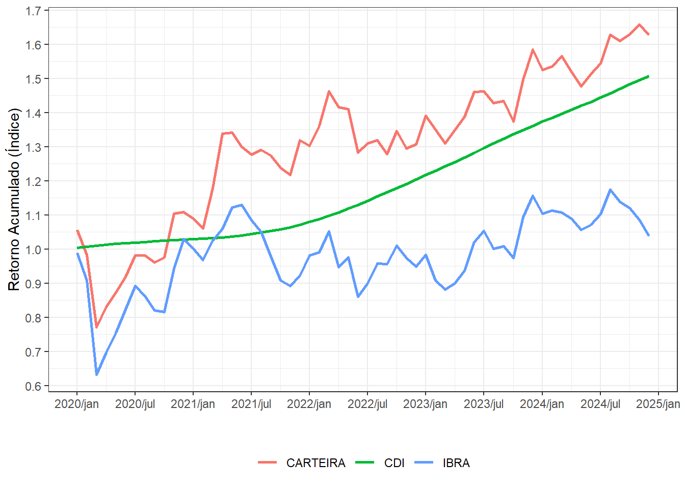

library(fPortfolio)
library(tidyverse)
library(zoo)
# DADOS ----
# Dados com os preços de fechamento de 114 papéis
data <- read_delim("data/Cotacoes18a25.csv") |>
mutate(
date = dmy(Data)
) |>
rename(
CDI = `CDI 252 dias`
) |>
select(-Data) |>
relocate(date)Otimização de Portfólio
Análise de uma carteira de ativos de risco ao empregar os pesos obtidos do portfólio de variância mínima (Markowitz, 1959)
Portfólio de variância mínima (MVP)
Markowitz (1959) introduz a ideia de considerar a relação risco/retorno não apenas de forma única para cada ativo, mas sim sob a forma do portfólio. Na busca por obter portfólios eficientes, eles são encontrados ao minimizar o risco para um dado retorno ou, de forma equivalente, maximizar o retorno para um dado risco. Como aponta Pfaff (2016), o tipo de otimização é diferente, sendo o primeiro uma otimização quadrática com restrições lineares e o último a função objetivo é uma função linear com restrições quadráticas.
Um portfólio é considerado um portfólio de fronteira se ele possui a menor variância dentre os portfólios com o mesmo retorno, sendo seu vetor de pesos \(w\) obtido através da solução do seguinte problema (Huang e Litzenberger, 1988):
\[\begin{aligned} \underset{w}{\min} \; \frac{1}{2}w^TVw \quad s.j. \quad w^Te=E[\widetilde{r}_p], \ w^Ti = 1 \end{aligned}\]
onde \(e\) denota o vetor de tamanho Nx1 das taxas de retorno esperadas para os N ativos de risco, \(E[\widetilde{r}_p]\) denota a taxa de retorno esperada do portfólio \(p\), e \(i\) é o vetor de 1’s Nx1.
Nosso objetivo então é realizar a otimização a fim de obter o portfólio de variância mínima e avaliar o seu retorno durante um período pré-definido. A solução para os pesos é dada por
\[w_{mvp} = \frac{V^{-1}i}{i^TV^{-1}i}\]
onde podemos ver que o vetor de pesos do portfólio de variância mínima não depende dos retornos esperados dos papéis.
Dados
Nesse trabalho utilizo os retornos diários, entre 02 de janeiro de 2018 a 30 de dezembro de 2024, dos papéis do Índice Brasil Amplo (IBrA) – resultado de uma carteira teórica de ativos que atendam a critérios mínimos de liquidez e presença em pregão. A partir desse critério de seleção, a otimização é feita para um portfólio de 110 papéis.
Durante 5 anos será realizado o rebalanceamento dos pesos do portfólio mês a mês, verificando seu retorno acumulado e a variação dos pesos dados aos diferentes papéis do portfólio de variância.
Indo direto para o código, utilizaremos o pacote fPortfolio para realizar a otimização e os pacotes do ambiente Tidyverse para a manipulação dos dados.
# A tibble: 6 × 114
date ABCB4 ALOS3 ALPA4 ALUP11 ABEV3 ANIM3 AZZA3 B3SA3 BPAN4 BRSR6 BBSE3
<date> <dbl> <dbl> <dbl> <dbl> <dbl> <dbl> <dbl> <dbl> <dbl> <dbl> <dbl>
1 2018-01-02 9.73 20.2 13.3 12.1 15.9 8.10 48.1 5.74 1.53 8.04 14.4
2 2018-01-03 9.77 20.4 12.9 12.0 15.9 8.16 49.5 5.84 1.55 8.08 14.4
3 2018-01-04 9.74 20.3 12.9 11.9 15.8 8.25 51.1 5.88 1.52 8.13 14.4
4 2018-01-05 9.88 20.4 13.1 11.9 15.9 8.33 49.4 5.96 1.56 8.24 14.5
5 2018-01-08 9.98 19.8 12.9 11.8 15.9 8.39 48.8 5.99 1.59 8.38 14.6
6 2018-01-09 10.00 19.6 13.0 11.8 15.8 8.29 48.4 5.91 1.59 8.34 14.5
# ℹ 102 more variables: BBDC3 <dbl>, BBDC4 <dbl>, BRAP4 <dbl>, BBAS3 <dbl>,
# AGRO3 <dbl>, BRKM5 <dbl>, BPAC11 <dbl>, CAML3 <dbl>, BHIA3 <dbl>,
# CMIG4 <dbl>, COGN3 <dbl>, CSMG3 <dbl>, CPLE3 <dbl>, CPLE6 <dbl>,
# CSAN3 <dbl>, CPFE3 <dbl>, CVCB3 <dbl>, CYRE3 <dbl>, DXCO3 <dbl>,
# DIRR3 <dbl>, ECOR3 <dbl>, ELET3 <dbl>, ELET6 <dbl>, EMBJ3 <dbl>,
# ENGI11 <dbl>, ENEV3 <dbl>, EGIE3 <dbl>, EQTL3 <dbl>, EVEN3 <dbl>,
# EZTC3 <dbl>, FESA4 <dbl>, FLRY3 <dbl>, FRAS3 <dbl>, GFSA3 <dbl>, …A partir do preços diários obtemos os retornos e log-retornos, pois precisaremos dos mesmos para realizar a otimização e calcular o retorno final da carteira. Utilizamos os log-retornos durante o processo de otimização devido as suas propriedades estatísticas (log-retornos se aproximam de uma distribuição normal).
data_longer <-
data |>
dplyr::select(-c(CDI, IBOV, IBRA)) |>
pivot_longer(
cols = -date,
names_to = "codigo",
values_to = "value"
)
# Retornos Diários
retornos_dia <- data_longer |>
group_by(codigo) |>
mutate(
retornos = (value/lag(value))-1,
l_retornos = log(value/lag(value))
) |>
ungroup() |>
drop_na()Otimização
Agora que temos nossos dados de log-retornos podemos iniciar o processo de otimização para encontrar os pesos do portfólio de variância mínima. Para isso, no entanto, devemos primeiro criar uma função que obtenha os pesos para 1 período apenas, e depois utilizar a função map para executar a função para todos os meses durante o período de 5 anos.
optim()
Basicamente, queremos que nossa função de otimização receba como parâmetros: a data de referência para o qual iremos manter aquela carteira (no caso, um objeto do tipo str com o mês, ex.: “2020-02-01”. Significa que esses serão os pesos da nossa carteira durante o mês de fevereiro do ano de 2020), nossos dados com o histórico de retornos para que as funções do pacote fPortfolio possam estimar a matriz de variância-covariância dos ativos e realizar a otimização e, por fim, um parâmetro que define se iremos estimar os pesos com uma restrição de peso máximo a 10% para cada papel (a literatura mostra que podemos melhorar o desempenho da carteira ao longo do tempo com a presença desse tipo de restrição).
optim <- function(data_referencia, dados_completo, restricao = FALSE) {
data_referencia <- as.Date(data_referencia)
# 1. Definir as datas da janela de treino (2 anos anteriores)
fim_treino <- data_referencia - days(1)
inicio_treino <- data_referencia - years(2)
# 2. Filtrar os dados e converter para timeSeries (exigência do fPortfolio)
dados_treino <- dados_completo |>
filter(between(date, left = inicio_treino, right = fim_treino)) |> # inicio_treino <= date <= fim_treino
select(-date) |>
as.timeSeries()
# 3. Executar otimização
if(restricao) {
constraint.10pct <- c(
paste0("minW[1:", ncol(dados_treino), "]=0.00"),
paste0("maxW[1:", ncol(dados_treino), "]=0.10"),
paste0("sumW[1:", ncol(dados_treino), "]=1")
)
spec <- fPortfolio::portfolioSpec()
opt <- tryCatch(
expr = { # é a expressão (expr) que você quer que o R tente executar.
fPortfolio::minvariancePortfolio(
data = dados_treino,
spec = spec,
constraints = constraint.10pct
)
},
error = function(e) {return(NULL)} # Este é o argumento que define o que fazer se o bloco principal falhar.
# e: representa o objeto de erro. O R passa automaticamente a mensagem de erro técnica para essa variável e.
)
} else {
spec <- fPortfolio::portfolioSpec()
opt <- tryCatch(
expr = {
fPortfolio::minvariancePortfolio(
data = dados_treino,
spec = spec,
constraints = "LongOnly"
)
},
error = function(e) {return(NULL)}
)
}
# caso haja algum erro durante a otimização a função 'optim' será encerrada, retornando NULL
if(is.null(opt)) return(NULL)
# 4. Não havendo erro durante o processo de otimização, nossa função 'optim' irá retoranr um tibble com a data de referência em cada linha e os respectivos pesos em cada coluna
pesos <- getWeights(opt)
bind_cols(
tibble(
date_ref = data_referencia
),
as_tibble(t(pesos))
)
}É importante se atentar para o fato de que o pacote fPortfolio exige que criemos um objeto da classe fPFOLIOSPEC que é retornado pela função portfolioSpec(), pois é um parâmetro obrigatório na função de otimização minvariancePortfolio(). No caso de haver restrições, a função de otimização exige em seu parâmetro constraints= que seja um vetor de strings, por isso a criação do objeto contraint.10pct.
Rebalanceamento mensal com o map()
Separamos então as variáveis que serão passadas como parâmetros para nossa função optim().
dados.f <- retornos_dia |> # retornos das ações
pivot_wider(
id_cols = date,
names_from = codigo,
values_from = l_retornos # utilizaremos apenas os log-retornos
)
# Definir o período de teste: Janeiro 2020 a Dezembro 2024 (5 anos)
datas_rebalanceamento <- seq(
from = as.Date("2020-01-01"),
to = as.Date("2024-12-01"),
by = "1 month"
)
# Rodar o loop: isso vai gerar um data frame onde cada linha é um mês com os pesos para aquele mês específico
portfolio <- map(
.x = datas_rebalanceamento,
.f = optim,
dados_completo = dados.f
) |>
list_rbind()# A tibble: 6 × 111
date_ref ABCB4 ALOS3 ALPA4 ALUP11 ABEV3 ANIM3 AZZA3 B3SA3 BPAN4 BRSR6
<date> <dbl> <dbl> <dbl> <dbl> <dbl> <dbl> <dbl> <dbl> <dbl> <dbl>
1 2020-01-01 0 0.0314 0 0.0973 0.0322 0 0 0 0 0
2 2020-02-01 0 0.0357 0 0.100 0.0306 0 0 0 0 0
3 2020-03-01 0 0.0106 0 0.101 0.0403 0 0 0 0 0
4 2020-04-01 0 0 0 0.0315 0 0 0 0 0 0
5 2020-05-01 0 0 0 0.0235 0 0 0 0 0 0
6 2020-06-01 0 0 0 0.0229 0 0 0 0 0 0
# ℹ 100 more variables: BBSE3 <dbl>, BBDC3 <dbl>, BBDC4 <dbl>, BRAP4 <dbl>,
# BBAS3 <dbl>, AGRO3 <dbl>, BRKM5 <dbl>, BPAC11 <dbl>, CAML3 <dbl>,
# BHIA3 <dbl>, CMIG4 <dbl>, COGN3 <dbl>, CSMG3 <dbl>, CPLE3 <dbl>,
# CPLE6 <dbl>, CSAN3 <dbl>, CPFE3 <dbl>, CVCB3 <dbl>, CYRE3 <dbl>,
# DXCO3 <dbl>, DIRR3 <dbl>, ECOR3 <dbl>, ELET3 <dbl>, ELET6 <dbl>,
# EMBJ3 <dbl>, ENGI11 <dbl>, ENEV3 <dbl>, EGIE3 <dbl>, EQTL3 <dbl>,
# EVEN3 <dbl>, EZTC3 <dbl>, FESA4 <dbl>, FLRY3 <dbl>, FRAS3 <dbl>, …Utilizamos a função map() para poder aplicar a função de otimização em cada um dos meses do vetor de datas, que são os meses para os quais queremos obter os pesos. Obtemos como retorno um tibble com onde cada linha representa o período e em cada coluna os respectivos pesos ótimos que serão mantidos naquele mês específico.
Perceba que vários ativos tem peso 0, o que significa que o processo de otimização para obter os pesos do portfólio de variância mínima indicou aumentaria a variância (e portanto o risco) do nosso portfólio.
Análise dos Retornos
Com os pesos em mãos, podemos verificar qual teria sido o retorno acumulado do nosso portfólio de variância mínima. Para isso, utilizaremos os retornos efetivamente observados, e não mais os log-retornos.
# Converto para pivot_longer para facilitar manipulação
retornos_dia <- retornos_dia |> # retornos das ações
pivot_wider(
id_cols = date,
names_from = codigo,
values_from = retornos # e não mais os log-retornos (l_retornos)
) |>
pivot_longer(
cols = -date,
names_to = "ativo",
values_to = "retorno_diario"
) |>
mutate(
date = floor_date(date, "month") # para obter compatibilidade com a data de referência do tibble dos pesos, pois todos estão como o dia 1 do mês
)
# Dados dos pesos obtidos a partir da otimização para cada mês
pesos_mes <- portfolio |>
pivot_longer(
cols = -date_ref,
names_to = "ativo",
values_to = "peso"
) |>
rename(date = date_ref)
# ------------------------------- #
# Portfólio
retorno_portfolio <- retornos_dia |>
filter(date >= min(datas_rebalanceamento)) |>
group_by(date, ativo) |>
# Acumulo o retorno diário de cada ativo específico naquele mês. Outra forma poderia ser simplesmente a variação entre o preço do ativo no primeiro e último dia do mês (matematicamente equivalente a acumular a variação de preços no mês).
summarise(
retorno_mensal_ativo = prod(1 + retorno_diario) - 1,
.groups = "drop"
) |>
inner_join(pesos_mes, by = c("date", "ativo")) |> # os pesos de um ativo pra aquele mês são repetidos em cada retorno diário daquele mês
group_by(date) |>
summarise(
retorno_mensal = sum(peso*retorno_mensal_ativo), # multiplico o peso pela variação acumualda no mês daquele ativo específico
.groups = "drop"
) |>
mutate(
retorno_acumulado = cumprod(1 + retorno_mensal)
)# A tibble: 6 × 3
date retorno_mensal retorno_acumulado
<date> <dbl> <dbl>
1 2020-01-01 0.0560 1.06
2 2020-02-01 -0.0692 0.983
3 2020-03-01 -0.215 0.772
4 2020-04-01 0.0758 0.831
5 2020-05-01 0.0509 0.873
6 2020-06-01 0.0535 0.919E por fim, calculamos o retorno acumulado do nosso portfólio e comparamos com o retorno acumulado do CDI no mesmo período, também comparando com o retorno do índice IBrA.
# CDI
retorno_cdi <- data |>
filter(between(date, as.Date("2020-01-01"), as.Date("2024-12-31"))) |>
select(date, CDI) |>
drop_na(CDI) |>
mutate(
CDI = (((1+(CDI/100))^(1/252))-1) # taxa a.a. para taxa a.d. (Over: mês com 21 dias e ano com 252)
) |>
group_by(date = floor_date(date, "month")) |>
summarise(
ret_mensal_cdi = last(cumprod(1 + CDI))-1
) |>
mutate(
ret_acum_cdi = cumprod(1+ret_mensal_cdi)
)
# ------------------------------- #
# IBrA
retorno_ibra <- data |>
select(date, IBRA) |>
drop_na(IBRA) |>
mutate(
retorno_ibra = (IBRA/lag(IBRA))-1,
date = floor_date(date, "month")
) |>
filter(between(date, as.Date("2020-01-01"), as.Date("2024-12-31"))) |>
group_by(date) |>
summarise(
retorno_ibra = prod(1+retorno_ibra)-1
) |>
ungroup() |>
mutate(
ret_acum_ibra = cumprod(1 + retorno_ibra)
)Comparação
Podemos analisar então como se deu a evolução dos retornos:
retornos <- list(
retorno_ibra |> select(date, ret_acum_ibra),
retorno_portfolio |> select(date, retorno_acumulado),
retorno_cdi |> select(date, ret_acum_cdi)
)
retornos_comparacao <- reduce(
.x = retornos,
.f = inner_join,
by = "date"
) |>
rename(
CARTEIRA = retorno_acumulado,
CDI = ret_acum_cdi,
IBRA = ret_acum_ibra
)# A tibble: 6 × 4
date IBRA CARTEIRA CDI
<date> <dbl> <dbl> <dbl>
1 2020-01-01 0.989 1.06 1.00
2 2020-02-01 0.908 0.983 1.01
3 2020-03-01 0.633 0.772 1.01
4 2020-04-01 0.697 0.831 1.01
5 2020-05-01 0.755 0.873 1.02
6 2020-06-01 0.824 0.919 1.02Graficamente temos:
retornos_comparacao |>
pivot_longer(
cols = -c(date),
names_to = "retornos",
values_to = "value"
) |>
mutate(
date = as.yearmon(date) # necessário para poder utilizar scale_x_yearmon() no ggplot
) |>
ggplot(aes(x = date)) +
geom_line(aes(y = value, color = retornos), linewidth = 1) +
labs(
x = "",
y = "Retorno Acumulado (Índice)",
color = NULL
) +
theme_bw() +
scale_x_yearmon(
format = '%Y/%b',
n = 10) +
scale_y_continuous(
n.breaks = 10
) +
theme(
legend.position = "bottom"
)
Vemos então que o retorno acumulado da nossa carteira supera o retorno acumulado do CDI durante o período de janeiro de 2020 a dezembro de 2025, com 1.627 e 1.507 respectivamente.
Métricas de Performance
Como medidas comumente utilizadas para avaliarmos nosso portfólio temos: o retorno médio, o risco (medido pelo desvio-padrão) e a Razão de Sharpe.
library(gt)
ret_med <- mean(retorno_portfolio$retorno_mensal)
std <- sd(retorno_portfolio$retorno_mensal)
cdi_med <- mean(retorno_cdi$ret_mensal_cdi)
descr <- tibble(
Metrica = c("Retorno Médio", "Desvio padrão", "Razão de Sharpe"),
Mensal = c(
ret_med,
std,
(ret_med - cdi_med) / std
),
Anual = c(
12 * ret_med,
sqrt(12) * std,
sqrt(12) * ((ret_med - cdi_med) / std)
)
)| Medidas de Perfomance | ||
| Análise do retorno relativo ao risco, retorno médio e o risco do portfólio | ||
| Mensal | Anual | |
|---|---|---|
| Retorno Médio | 0.97% | 11.61% |
| Desvio padrão | 5.50% | 19.06% |
| Razão de Sharpe1 | 0.05 | 0.18 |
| 1 Razão de Sharpe: qual o retorno entregue acima da taxa livre de risco (CDI) para cada 1% de risco desse portfólio. |
||